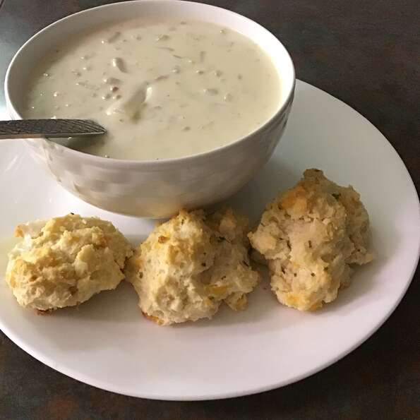

Clam Chowder Recipe

Description
The best ever clam chowder you have ever tasted, and it is easy and fast.
You will pass this recipe along to your family and friends. If you like
more clams you can always add more. Sometimes I will also cube potatoes
and throw them in.
Ingredients
- 1 (10.75 ounce) can condensed cream of celery soup
- 1 (10.75 ounce) can condensed cream of potato soup
- 1 (10.75 ounce) can New England clam chowder
- 2 (6.5 ounce) cans minced clams
- 1 quart half-and-half cream
- 1 pint heavy whipping cream
Directions
- Mix cream of celery soup, cream of potato soup, clam chowder,
1 can undrained clams, 1 can drained clams, half-and-half cream,
and whipping cream into a slow cooker.
- Cover, and cook on low for 6 to 8 hours.